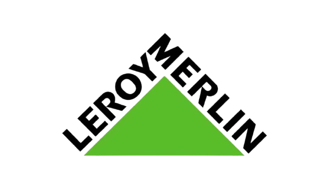
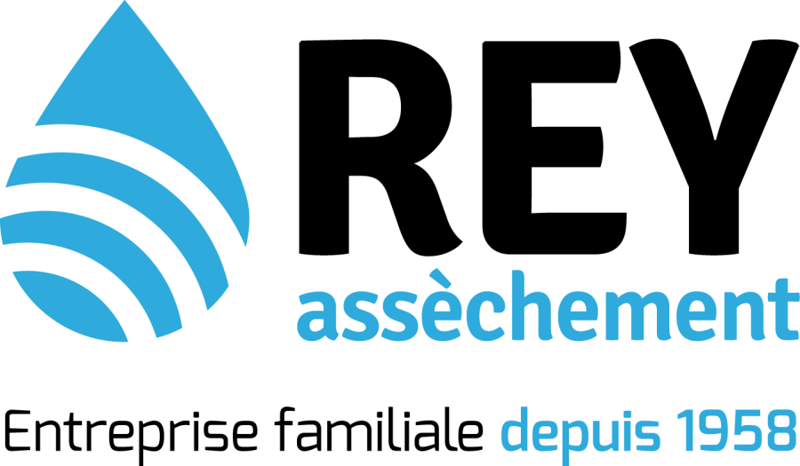
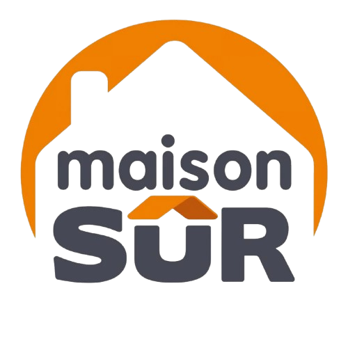
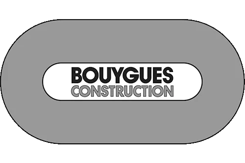
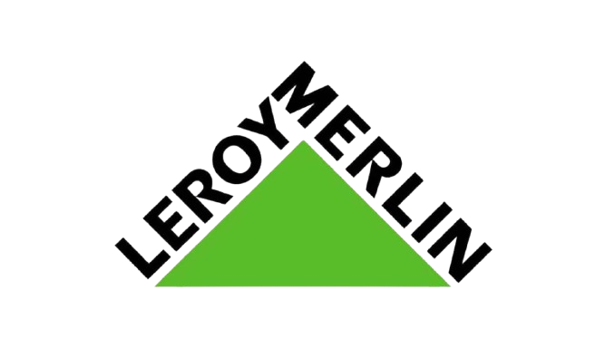
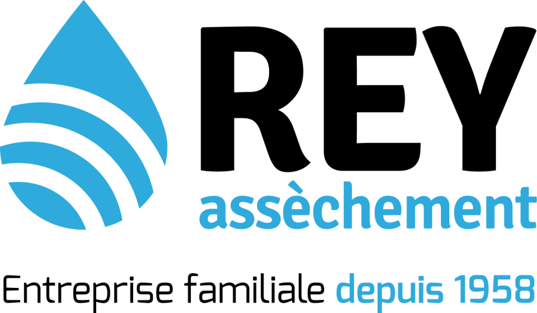
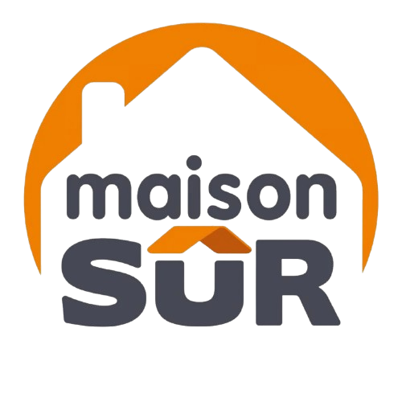
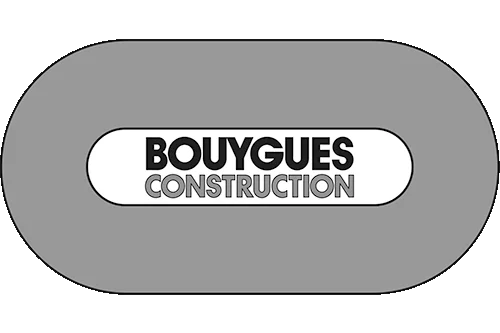

Mesurez l’humidité, agissez contre l’insalubrité
Un projet pour équiper votre commune pour améliorer la qualité de vie de vos citoyens.
Notre Mission
Nous installons des capteurs dans les logements pour mesurer l’humidité, la qualité de l’air et la température, et calculer un risque sanitaire. Les locataires peuvent signaler des problèmes via notre app, alertant la mairie et le bailleur. La mairie veille à ce que les bailleurs agissent vite pour protéger la santé des habitants.
Déploiement des capteurs
Récepetion des alertes
Coordination avec la mairie et le bailleur
Nos supports numériques
Grâce à des capteurs et une application, les locataires signalent les problèmes comme la moisissure et la mairie récupère les données et intervient auprès du bailleur qui ne réagit pas.

Coté Citoyens
En cas de graves traces de moisissure, ainsi le calcul de taux d’humidité élevé le locataire peut la signaler en quelques clics via l’application. Le bailleur est immédiatement alerté et tenu d’intervenir.
Coté Mairie
La mairie reçoit en temps réel les signalements et les données des capteurs. Elle suit l’état d’avancement des signalements reçus, et identifie les situations à risques.
Nos Bénéfices

Amélioration de l’image et de l’attractivité de la ville
Ce type de projet montre que la mairie se soucie activement du bien-être de ses citoyens et de la qualité de vie dans la commune.
Réduction des coûts à long terme
La maintenance préventive et la détection précoce des problèmes éviteraient des réparation majeures et onéreuses à l’avenir.

Amélioration de la santé publique et des conditions de vie
En détectant les taux d’humidité excessifs, la mairie peut anticiper et prévenir l’apparition de moisissures, d’acarien et de champignon qui sont des facteur aggravant pour les gens ayant des problèmes respiratoires.

Collecte de données pour des politiques publiques ciblées
Les données pourraient également servir de base pour des campagnes de sensibilisation des habitants sur les gestes simples à adopter pour réguler l’humidité dans les logement.
Avis Clients
95% des utilisateurs recommandent l’application
Mairie du 2ème
“Je recommande ce logiciel à toute les mairies du Rhône “
★ ★ ★ ★ ★
Mairie du 6ème
“Facile d’utilisation, je suis satisfait ! “
★ ★ ★ ★ ☆
.png) 






